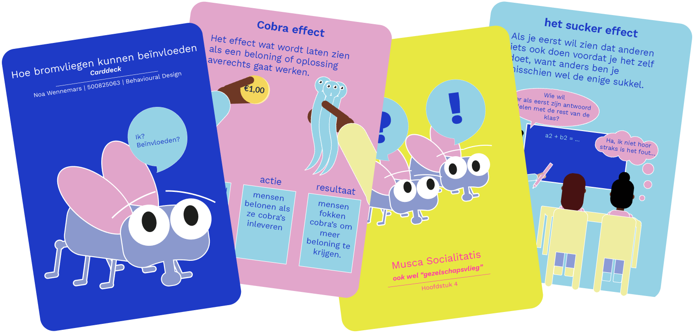

Carddeck
behavioral princples
The assignment
In the third year of my studies, I followed a semester where I could pick subjects to my own interest. This semester was called Behavior Design. During that semester I read a book, het Bromvliegeffect / The Bluebottle Fly Effect. I did this to get to know the principles of behaviour design. The assignment was to visualize the core message and information of the book. A carddeck was fitting for this book, because the chapters are separated per fly. Which means every chapter has its own subject within the behaviour principles. A deck of cards would be fitting in this case.
My process
" The Bluebottle Fly Effect " by Eva van den Broek and Tim den Heijer had been on my list of books I wanted to read for a while. According to the book's cover, it explores how everyday phenomena influence our behavior. I found that quite intriguing and wanted to learn more about it.
While reading, I chuckled at how behavior was described. At some points, it was even painfully thought-provoking. I took notes on the way behavior is influenced as I read. Once I finished a chapter, I began creating illustrations based on those notes.
It was an enjoyable process, and for the first time, I read a book with the intention of creating something from it, which made me read it more consciously, I noticed.
The carddeck
All of the sketchnotes resulted in a digitally illustrated carddeck. Under this text you can scroll through the cards.
If the pdf is not available. Here's a link to download the card deck.
Other work
Oh you reached the bottom of this page. You might like some other projects as well.
Rythm Ritje
graduation project

A11y
delve into accessibility